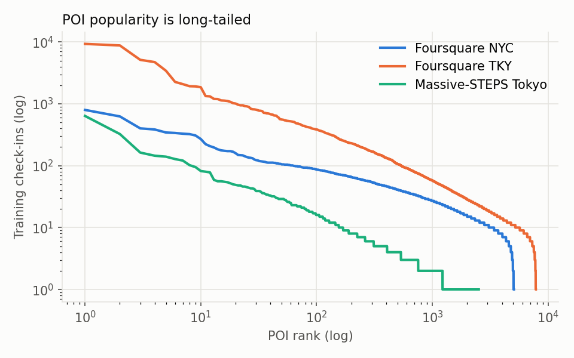
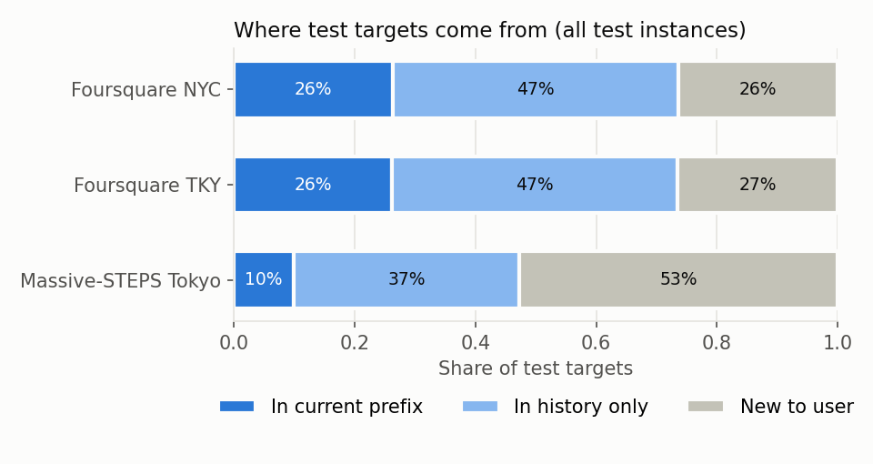
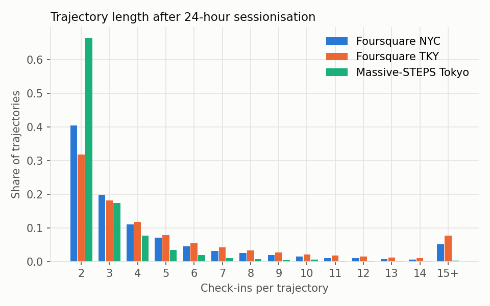
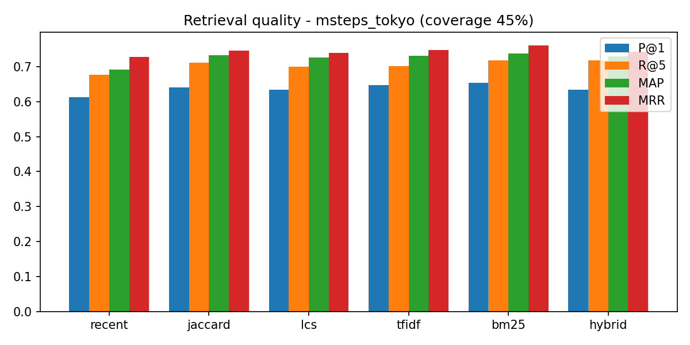
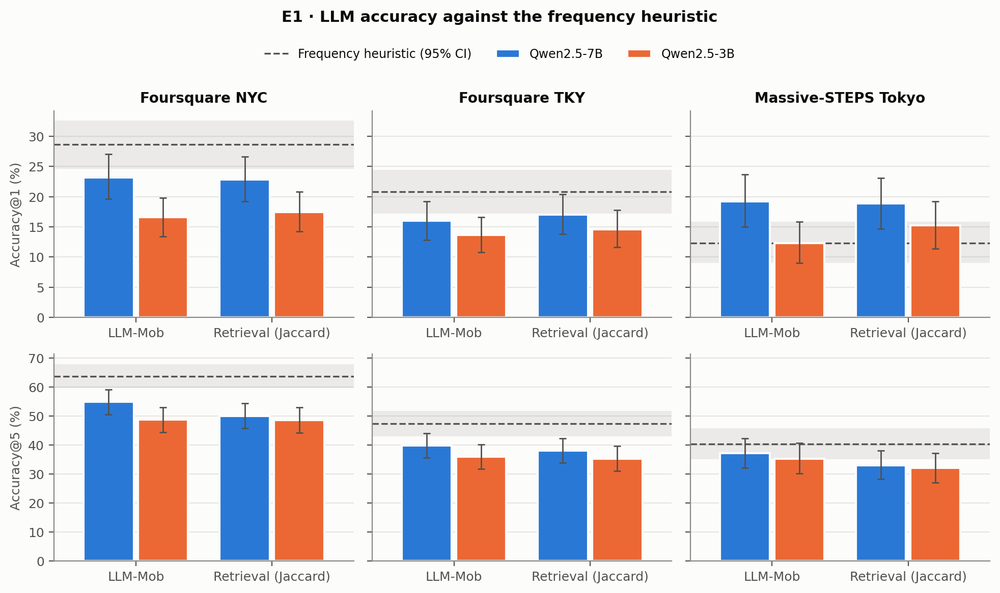
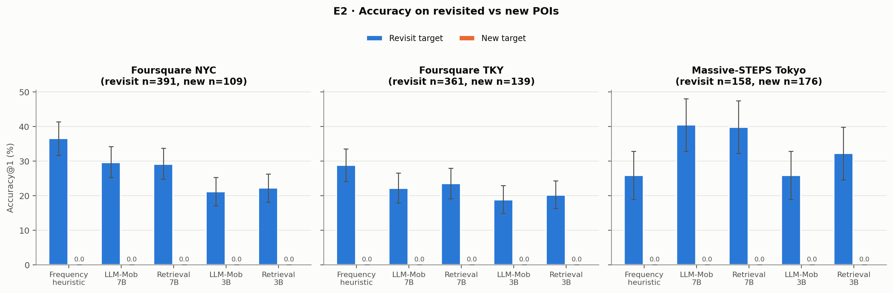
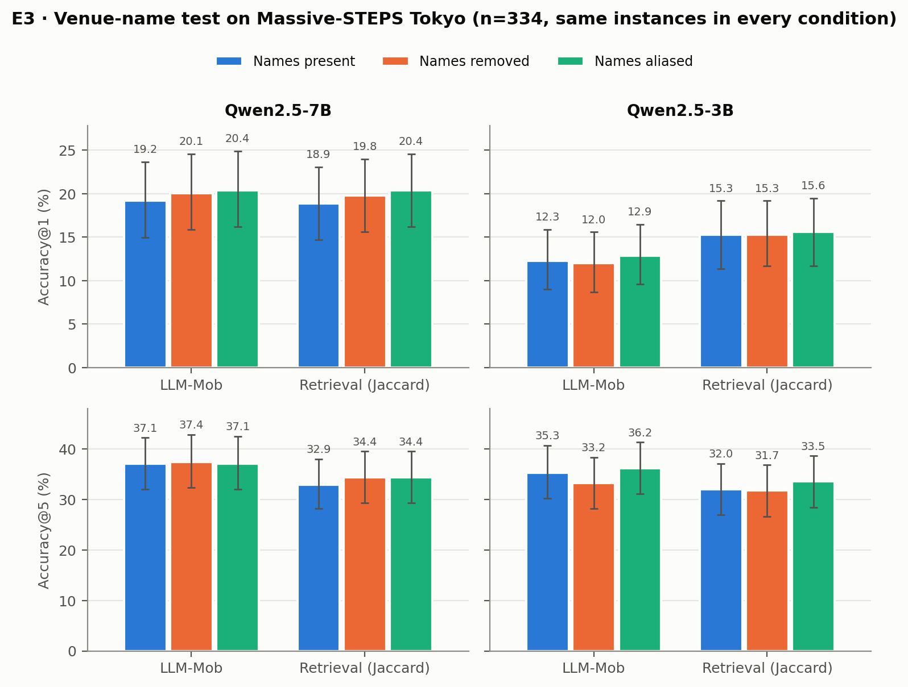
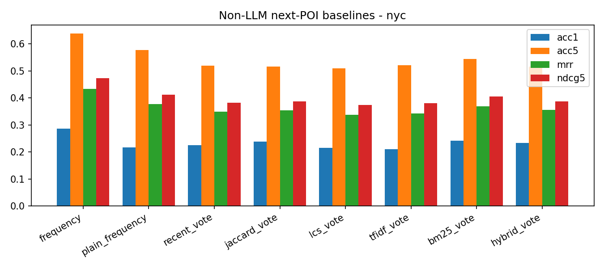

Abstract. Several recent papers prompt a language model with a user's check-in history and ask it for the next place the user will visit. They report good accuracy, but each uses its own dataset, split and metric, so it is hard to say what the model is actually contributing. We build one fixed evaluation protocol and use it to separate three possible sources of accuracy: copying places the user has already visited, recalling knowledge about named venues, and reasoning about a place from context alone. We compare a time-aware frequency heuristic with Qwen2.5-7B and Qwen2.5-3B (4-bit) under two prompting styles, on Foursquare NYC, Foursquare TKY and Massive-STEPS Tokyo, and add two diagnostic tests: a split into revisit and new targets, and a test where venue names are shown, removed or replaced by fake aliases. We also implement and compare five retrieval methods (Jaccard, LCS, TF-IDF, BM25 and a hybrid) for picking similar past trajectories. On NYC and TKY the heuristic is better than every model we ran (28.6 against 23.2 on NYC, 20.8 against 16.0 on TKY, Accuracy@1), on the small and sparse Tokyo set the 7B model is better (19.2 against 12.3), no model gets a single new place right at rank 1, and hiding venue names changes nothing we could measure. For these two small models, accuracy is explained almost completely by copying the user's own history.
Next point-of-interest (POI) recommendation asks which place a user will check in at next, given what they visited before. It sits behind map suggestions, trip planners and location-based advertising, and it is an old problem for graph and sequence models. Over the last two years the usual recipe has changed: instead of training a model, people write the user's recent check-ins into a prompt and let a pretrained language model answer [1, 2, 3, 5]. The reported numbers look good, and the natural reading is that the model understands how people move.
We were not sure that reading is safe. A person's next check-in is very often a place they have been to before, and a counter that ranks places by how often the user visited them needs no language model at all. A prompt that contains the user's history also contains most of the right answers. If the model mostly picks things out of its prompt, calling that reasoning would be generous. A different worry applies when the dataset has venue names: the model may have seen those venues, or even these exact datasets, during pretraining, and may be answering from memory.
The papers we read do not let a reader separate these explanations. They differ in how a "history" is defined, how the data is split and which metrics are used, and most of them have no cheap non-LLM baseline in the table. Our aim is to supply that missing piece, and not to propose another prediction model.
Contributions.
LLMs for next-POI prediction. LLM-Mob [2] was one of the first to put mobility records into a prompt. It separates historical stays (long-term habits) from context stays (the current trip) and gives the model the time of the query. LLM4POI [1] takes the other route and fine-tunes a language model on trajectories rendered as text, using time, category and coordinates, and reports clear gains over graph-based baselines on NYC, TKY and CA. RALLM-POI [5] stays zero-shot: it retrieves past trajectories, reranks them by distance, and adds a second pass in which the model checks its own answer; it uses GPT-4o-mini on Foursquare data from Singapore, NYC and Phoenix.
Which examples to show the model. Nishida et al. [3] compare ways of choosing the demonstration trajectories placed in the prompt, including Jaccard and LCS similarity, DTW, geographic proximity and temporal ordering, with models such as Qwen2.5-7B-Instruct and GPT-4o, and with history taken from all users or from the target user only. Our retrieval prompts follow their Jaccard setup, and their published Accuracy@1 ranges are what we compare with in Section 6.6.
Data. NYC and TKY come from the Foursquare collection of Yang et al. [6]; they contain IDs and categories but no venue names. Massive-STEPS [4] builds on Semantic Trails and adds POI names and addresses from Foursquare Open Source Places, covers several cities and two time periods (2012-13 and 2017-18), and includes zero-shot LLM benchmarks.
Retrieval methods. We use standard ranking functions from text retrieval: TF-IDF with cosine similarity [9], BM25 [8], and reciprocal rank fusion for combining rankings [10], applied to POI sequences instead of words.
What is different here. The works above ask how to make LLM prediction more accurate. We ask what the accuracy is made of. We did not find a study that puts a time-aware counting heuristic, a revisit/new split and a name-disguise test into one protocol with paired statistics. The first two follow hints in the literature (some published results already hint that targets absent from the prompt are rarely predicted); the name-disguise test, with consistent per-POI aliases in the same prompts, is as far as we know new for this task. We claim a diagnostic study, not a new model.
The question is how much of an LLM's next-POI accuracy comes from each of three sources: copying (repeating a place from the user's own history, which a counter can do), recall (memorised knowledge about named venues), and reasoning (a place that cannot be read off the history). We want a measurement design that gives each source a test, and a retrieval component that is good enough to be used as the example selector in the LLM prompts. Concretely:
TraceX is not a new predictor but an evaluation pipeline. Figure 1 shows how the parts connect. The data stage turns raw check-ins into leakage-checked prediction instances. Each instance goes to three predictors that share the same inputs: the heuristic, an LLM prompted with the user's most recent trajectories (LLM-Mob style), and an LLM prompted with trajectories chosen by a retriever. Their ranked outputs are scored on the same instances.
Check-ins are cleaned (missing fields, invalid coordinates and exact duplicates removed), converted to local time, and filtered as in LLM4POI [1]: POIs with fewer than 10 check-ins and then users with fewer than 10 are dropped for NYC and TKY. Massive-STEPS is too sparse for that (the median POI has one training check-in), so it keeps users with at least 5 check-ins. The data is split chronologically on the global timeline, 80% / 10% / 10% for train / validation / test. A user's check-ins are cut into trajectories wherever there is a gap of 24 hours or more, and a trajectory never crosses a split boundary. Validation and test keep only users and POIs seen in training, and trajectories need at least two check-ins.
One prediction instance is made per validation or test trajectory: the input is the trajectory without its last check-in (the prefix) and the user's history, and the target is the last check-in. We fix the history to be the user's training trajectories that end before the target trajectory starts, because earlier papers define it differently. A target counts as a revisit if its POI appears in the history or the prefix, and as new otherwise. These labels are used for scoring only. Evaluation uses a fixed random sample of 500 test instances per dataset (seed 42); Massive-STEPS Tokyo has only 334 test instances, so all of them are used. A set of leakage checks runs after preprocessing (28 per dataset) and the build fails if any of them fails; they cover split order, history timing, the target being the last check-in and absent from the prefix, and reproducible samples.
The heuristic scores every POI the user has visited and ranks them. Each earlier check-in c at POI p contributes a weight that falls with its age and rises if it happened at a similar time of day or on the same weekday as the target:
where Δtc is the age of the check-in in days measured from the target's time, h is the half-life, and hour* and weekday* are the target's hour and weekday. These are the only target fields the heuristic reads. They are also the only target fields the LLM prompts contain (the prompt says when the next check-in happens), and the target's place, category and name are never used. If fewer than 20 POIs have a score, the list is filled with globally popular POIs. We tried 240 settings of (h, α, β, window) on 500 validation instances per dataset and kept the one with the best mean reciprocal rank across datasets: h = 90 days, α = 4, β = 0, window = 1 hour. The weekday term was switched off by the search, so hour of day does the work. On validation, the mean MRR is 0.315 with these settings and 0.289 for the plain visit counter (α = β = 0, no decay). Both are reported.
For an instance, the query is the list of POI IDs in the prefix, and the candidates are the user's history trajectories. A retriever ranks the candidates; ties are broken in favour of the more recent trajectory. Let q be the query and d a candidate, both as POI sequences.
Here a "term" is a POI ID and a "document" is a trajectory. Document frequencies are computed on the training trajectories only. We also keep a control called recent, which just returns the most recent trajectories and uses no similarity, so that we can tell whether similarity adds anything. BM25's k1 and b were tuned on validation (Section 6.3).
The retrieval stage is scored in two ways. For retrieval quality, a candidate trajectory counts as relevant if it contains the target POI; this uses the target, for scoring only. We report Precision@K, Recall@K, F1@K, mean average precision (MAP) and mean reciprocal rank (MRR). Instances where no candidate is relevant (the target is new, or only in the prefix) cannot be scored, so they are left out and the share that remains is reported as coverage. For next-POI prediction, a vote baseline ranks POIs by the similarity-weighted count of POIs in the top-3 retrieved trajectories, which isolates the retrieval step from the LLM.
We use Qwen2.5-7B-Instruct and Qwen2.5-3B-Instruct [7] in 4-bit NF4 quantisation [11] on one Kaggle T4 GPU, with greedy decoding (temperature 0) and a repetition penalty of 1.0 (the model's default of 1.05 would push it away from IDs that are in the prompt and bias the very copying we want to measure). Every check-in is written as one line, for example 2013-01-02 12:39 Wednesday | POI 481 | Department Store, with the venue name added on Massive-STEPS when names are shown. The model must return JSON with ten ranked POI IDs. Two prompts are compared. LLM-Mob [2] shows the 40 most recent history check-ins, grouped by trajectory, and the current trajectory. Retrieval shows five demonstration trajectories chosen by Jaccard similarity [3], each ending with its next check-in, followed by the current trajectory. Invalid or unparseable answers are kept as misses; we do not pad them with heuristic guesses.
For E3, Massive-STEPS Tokyo is run three times on the same 334 instances: names present, names removed, and names replaced by aliases. An alias is a random katakana pseudo-word assigned once per POI ID (so two branches of a chain get different aliases), with a length similar to the real names. History, targets, IDs, categories and times are identical across the three conditions, and we checked that the prompts differ only in the name spans.
For a ranked list and a target, Accuracy@K is 1 if the target is in the top K, MRR is 1/rank (0 if absent), and NDCG@K = DCG@K/IDCG@K with a single relevant item. For the retrieval study, with R the set of relevant candidates and k the cut-off:
P@k divides by k even when a user has fewer than k candidates, so it is conservative for users with short histories. We also report two behaviour rates: the copy rate (the top-1 prediction is a POI from the history or prefix) and the invalid rate (no usable top-1 POI). All methods see the same instances, so differences are paired: we use 95% percentile bootstrap intervals (10,000 resamples), McNemar's test [12] on Accuracy@1, and Holm's correction [13] within each table.
Table 1 summarises the three datasets after processing. The two Foursquare sets cover the same ten months of 2012-13 and are used for E1 and E2. Massive-STEPS Tokyo covers 2017-18, has a name and address for every POI, and is used for E3. It is much smaller and sparser than the other two (median 10 check-ins per user, median trajectory length 2), and only 47% of its test targets are revisits, against about 74% for NYC and TKY. Its numbers are therefore not directly comparable with the other two. For NYC and TKY our filter stage reproduces the published check-in counts (147,938 and 447,570) exactly; the final user and POI counts match within 0.1% for TKY and are about 2% higher for NYC, which we put down to a difference in how the reference code prunes trajectories.



Tables 2 to 4 compare the retrieval methods on the 500-instance samples. Coverage (the share of instances with at least one relevant candidate) is 76% on NYC, 70% on TKY and 45% on Tokyo; the rest cannot be scored. BM25 is the best method on every dataset in P@1, F1@3, MAP and MRR. On NYC its MAP is 0.689 against 0.617 for the no-similarity control and 0.645 for Jaccard. On TKY the gain over the control is larger (0.610 against 0.514), which makes sense because TKY users have longer histories (median 121 history check-ins against 74) and so more candidates to choose between. On NYC the control is already strong, because a user's most recent trips are often the relevant ones. LCS, which respects order, does not beat the order-free Jaccard, and the hybrid did not beat BM25 on its own.
{{TABLES_RETRIEVAL}}


Retrieval settings were chosen on 500 validation instances per dataset, never on test. The best BM25 setting had b = 0, which means no document-length normalisation, and k1 hardly mattered. That is plausible here, because a trajectory with many check-ins is not padded with irrelevant words the way a long web page is. Table 5 shows how MAP falls as length normalisation increases. The tuned setting also beats the usual default (k1 = 1.5, b = 0.75) on the test sample, from 0.663 to 0.689 MAP on NYC and from 0.584 to 0.610 on TKY.
{{TABLE_VAL}}Table 6 and Figure 9 give the main comparison. Retrieval-prompt runs use Jaccard demonstrations (Section 5.4). On NYC and TKY the time-aware heuristic is better than every LLM run, and the difference is statistically significant for LLM-Mob 7B on both datasets (−5.4 points, p = 0.035 on NYC; −4.8 points, p = 0.021 on TKY). It also outperforms the plain visit counter, by 6.8 points on NYC and 1.6 on TKY. On Massive-STEPS Tokyo the picture reverses: the heuristic is worse than the plain counter (12.3 against 16.8), because we tuned its settings jointly on the three datasets and Tokyo, with very short histories, does not share their preferences, and the 7B model beats it by 6.9 points (p = 0.015). The 7B model is better than the 3B model in every setting; the gap is significant for LLM-Mob on NYC and Tokyo and for retrieval on NYC (Table 9). Retrieved demonstrations did not help: on 7B, the two prompting styles are within about one point of each other everywhere, and the retrieval prompt is lower at Accuracy@5, partly because it often shows only two to five distinct POIs and so cannot list ten different answers.

Revisit versus new. Table 7 and Figure 10 split Accuracy@1 by target type. For new targets every LLM run scores 0.0%, on all three datasets. The heuristic also scores 0.0% on new targets at rank 1. So the models' entire score comes from revisits, where the heuristic is stronger on NYC and TKY (for instance 36.6% against 29.7% for LLM-Mob 7B on NYC) and weaker on Tokyo (25.9% against 40.5%). The new-place result should be read with a caveat that belongs to the setup and not only to the models: the prompt contains only anonymous POI IDs that appeared in the user's own trajectories, and no list of candidates. A place the user has never visited has an ID the model has never been shown, so naming it would be a guess among several thousand integers. The 0% shows that this protocol cannot reward new-place predictions; it does not show that a model with more to go on could not make them.

Name test. Table 8 and Figure 11 show Massive-STEPS Tokyo with names present, removed and aliased. For Qwen2.5-7B with LLM-Mob, Accuracy@1 is 19.2% with real names, 20.1% with names removed and 20.4% with aliases. All pairwise differences have intervals that include zero, and every adjusted p-value is 1.0. We see no sign that these models rely on venue names. With 334 instances the intervals are about ±4 points wide, so a smaller effect could be hiding. Also, aliasing keeps the categories, IDs and visit pattern, so a model could still identify a place from those; the test measures reliance on names, not whether the data was memorised.

Size. Going from 3B to 7B adds 3.6 to 8.1 points of Accuracy@1 on NYC and Tokyo (significant for LLM-Mob in every condition, and for retrieval on NYC), and 2.4 points on TKY (not significant).
Behaviour. Figure 12 shows how often each run copies and how often it fails to give a usable answer. Between 90% and 100% of top-1 predictions are places from the user's own history or current trajectory, and the invalid rate is close to zero (at most 0.3%), so the accuracy differences above are not caused by parsing failures. The lowest copy rates (about 90%) are the 3B retrieval runs on Tokyo.

Non-LLM next-POI baselines. Table 10 gives the retrieval vote baselines next to the two counters (Accuracy@1 and @5, MRR and NDCG@5 over a 20-item list). On NYC and TKY, voting over retrieved trajectories is not better than counting: on NYC the time-aware heuristic reaches 28.6% Accuracy@1 against 21.0–24.2% for the vote variants, and on TKY 20.8% against 16.0–16.8%. On Tokyo it is the other way round. The vote baselines (17.7–18.9%) are above both counters and close to the 7B model's 19.2%, so on that sparse dataset a retrieval vote with no LLM does about as well as the LLM.


Comparison with the published setup. Nishida et al. [3] report Accuracy@1 for Qwen2.5-7B with 5 to 30 demonstrations from the user's history of 0.18–0.23 on NYC and 0.16–0.19 on TKY, and 0.32–0.36 and 0.24–0.30 for GPT-4o with the same prompts; they list fine-tuned LLM4POI [1] at 0.337 and 0.304. We took these figures from our project brief, which read them from that paper, so they should be checked against the paper before this report is submitted. Our Qwen2.5-7B runs give 0.228–0.232 on NYC and 0.160–0.170 on TKY, inside the published ranges (the NYC values are at the top of the range), so our pipeline reproduces the published level of accuracy. The splits and samples differ, so the match is approximate. The comparison also puts our heuristic in context: on NYC a counter reaches 0.286, above the published 7B range, although the heuristic is not a like-for-like competitor because the splits differ. We did not run a larger model, so we cannot say if the pattern holds for GPT-4o or for a fine-tuned model such as LLM4POI.
Read together, the experiments give a consistent picture for these two models. (1) A counter that knows the user's history, the hour and the recency matches or beats the models on the two large datasets. (2) None of the accuracy is on places the user has not been to. (3) Taking away venue names costs nothing measurable. (4) The models copy: 90–100% of their first guesses come from the user's own prompt. We would not describe this as reasoning about where people go, nor as recall of venue knowledge. It looks like picking a recent or frequent place out of the context, which a counter does as well or better.
Two results do not fit that story neatly. On Tokyo the 7B model beats the heuristic, which suggests that where the history is short and sparse the model's use of the sequence and the time stamp helps, or that our heuristic was tuned for the wrong regime. And the 7B model is clearly better than the 3B model, so scale does matter at this size. Whether it matters enough to change the conclusion at GPT-4o scale is the main open question.
On retrieval, BM25 selects relevant history trajectories better than Jaccard, LCS and TF-IDF, and the gap is larger when users have long histories. We did not re-run the LLM with BM25 demonstrations (the runs use Jaccard, following [3]), so we do not know whether better retrieval would change the LLM numbers. The vote baselines suggest the effect would be small on NYC and TKY, where retrieval votes do not beat counting, though on Tokyo the votes are competitive with the LLM.
Conclusions. Under one leakage-checked protocol, Qwen2.5-3B and 7B behave mostly as copy-and-recency predictors. On NYC and TKY a time-aware frequency counter is more accurate than either model with either prompt. All of the models' accuracy is on revisit targets, none on new ones, and hiding or aliasing venue names has no measurable effect on Massive-STEPS Tokyo. Among the five retrieval methods, BM25 selects the most relevant past trajectories on all three datasets. The contribution is the measurement design, the heuristic floor, the retrieval comparison and the released perturbed test sets, together with code that reruns everything.
Limitations.
Reproducibility. python -m tracex_data all rebuilds the data; python -m tracex_ir.evaluate reproduces the retrieval and baseline tables; python -m tracex_llm.evaluate reproduces the LLM tables from the saved runs; the dashboard is started with streamlit run app/dashboard.py. Every LLM run is stored with its settings, GPU and library versions.